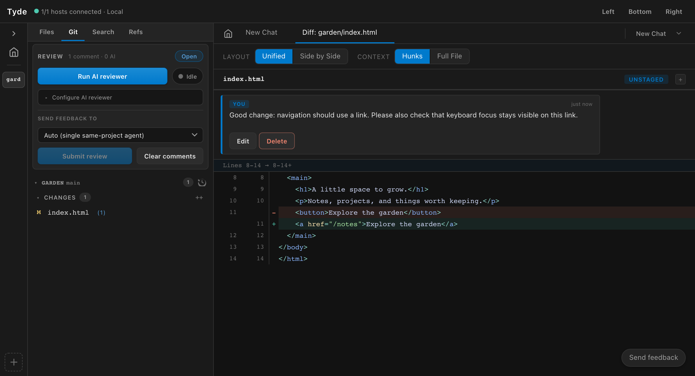

Git changes and review comments
Inspect working changes and commits, add file or inline comments, and submit feedback to an agent.
Open a file, working change, or commit
Tyde connects review feedback to source code. You can inspect a file as it exists now, uncommitted changes, or changes from Git history.
| What you need | Where to begin |
|---|---|
| Understand a file | Open it from the file explorer. Use a file comment for feedback about the whole file, or an inline comment for a specific location. |
| Review current edits | Open the Git panel and select a file under Changes or Staged. Check the root and the diff before commenting. |
| Review committed work | Choose Recent commits in the Git root header, select the commit or range, and open a changed file. |
{kind=link}

Read the change in context
Use unified or side-by-side diff views to compare old and new code. Expand context when you need to understand the surrounding function. A short diff can hide assumptions elsewhere in the file, so open the source when the change deserves a broader look.
For a multi-root project, confirm the repository as well as the filename. Review the actual changes rather than relying only on the agent’s explanation of them.
Add and submit review comments
- Find the relevant line or use Comment on file for feedback that applies to the file as a whole.
- Write the expected behavior and explain why the current change misses it.
- Open Review comments to read the collected feedback across roots.
- Choose the recipient under Send feedback to, then use Submit review when the review is ready.
- Read the agent’s response and review the revised code.
This returns an empty page when there are no results. Show an empty-state message with a way to clear the filters, so the user can recover without reloading.
A draft comment is not a submitted review. Collect your feedback, check its target, and submit it deliberately. If AI suggestions are pending, accept or reject them before submitting.
Configure review aspects
Open Settings → Review on the host where your agents run. Use the master switch to enable or disable reviews, and Add aspect for each focus area. Each aspect has a name, description, and instructions, independent of backend or model. Configure shared model and reasoning settings separately for light reviews and for each deep-review backend. Use its switch to disable it, Edit to open its configuration dialog, or Delete to remove it. You can also ask the Help agent to add, edit, or remove aspects.
The Git sidebar shows only review counts, status, and Open review. Open it to read findings in the main workspace, grouped by file with source navigation. Expand Review actions to run a review, choose a feedback recipient, submit, or clear comments. Expand Review rounds for reviewer history and agent responses.
Run review in the main review actions uses your selected depth against one frozen snapshot. Light launches one agent with all enabled aspects. Deep launches one Claude and one Codex agent per aspect: five aspects launch ten agents concurrently, with correspondingly higher cost. The default depth is configured in Settings; desktop, mobile, and agent requests can override it. Progress, failures, findings, and agent responses appear by aspect, reviewer, and round. Duplicate findings stay attributed rather than being automatically merged. Missing backends count as failures, not complete reviews. Historical rounds retain the aspect instructions used at launch. Stop review interrupts the active reviewers. A failed or cancelled reviewer is incomplete, not a clean review.
Coding agents can call tyde_request_review with optional mode: "light" or mode: "deep". The reviewers appear as children of the requesting agent, even when they use different backends. The agent calls tyde_await_review with the returned review_id and round_id, then reads findings with tyde_get_review. Completion never injects a conversation message or accepts suggestions for you. Closing the requester closes its reviewers; manually launched reviewers remain independent. The agent can fix actionable findings, record reasons with tyde_review_disposition, and request another round on the updated changes. tyde_get_review retrieves progress and history. Manual reviews retain the normal accept-and-submit flow. Enabling reviews does not trigger a paid review after every chat response.
Existing reviewer definitions are converted once to aspects, preserving their text and enabled switches. Per-reviewer backend/model choices are discarded; configure the shared execution settings after upgrading. Older rounds remain readable and are labeled Legacy.
Stage and commit changes
The Git panel separates staged changes, unstaged changes, and untracked files. Stage the files you intend to include, inspect the staged result, and write a commit message describing the change. In a multi-root project, repeat this for each repository involved.
Use discard controls carefully: discarding a file’s working changes is different from rejecting a review suggestion. For parallel changes, workbenches give each task a separate working tree.